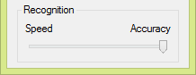
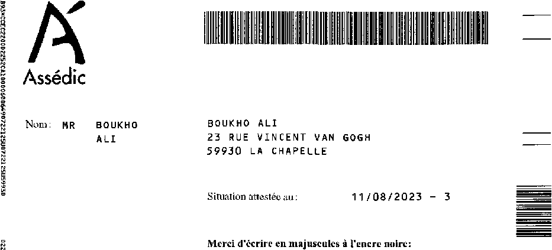
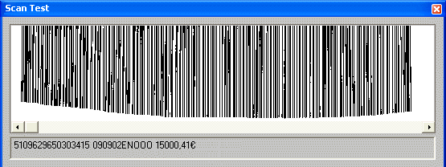
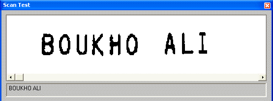
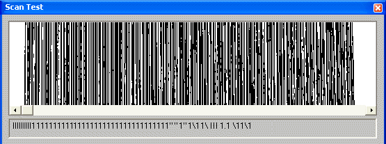

Tweet
Tweet
The advanced OCR solutions take this idea one step further by having two to three OCR engines recognize a document separately — each engine employs his own neural network, or one employs a neural network while another applies word recognition — after which the results of the various engines are compared again and recombined.
| image | ||
| OCR engine 1 certainty |
C 95% |
l 60% |
| OCR engine 2 certainty |
0 45% |
l 90% |
| voting algorithm | C | l |
That’s why state-of-the-art OCR software offers a “fast” and an “accurate” recognition mode. “Fast recognition” gives you the results of one OCR engine, the “accurate mode” is slower but combines the best results of two or more recognition engines.

Such “voting systems” may be over the top for the conversion of “neat” laserprinted documents: as each page gets recognized several times, the speed drops tremendously — and more often than not without yielding a significant increase of the OCR accuracy. Slowing down the recognition by a factor 2 to 3 to increase the accuracy from, say, 99.56% to 99.62% is only feasible in professional applications where extreme accuracy is a key element — the reading of checks, deposit slips etc.
In other circumstances, the accurate mode offers significantly more precision: when you’re recognizing low-quality documents — degraded faxes, bad xerox copies, snapshots made with a digital camera or other low-resolution images etc. — the loss in speed is more than compensated by the higher precision of the recognition process. On “good-quality” documents — for instance crisp, laserprinted documents — the fast recognition mode does fine…
A variation on the theme of voting systems is used to combine recognition engines that read different types of data — for instance an OCR engine and a bar code reading engine. Let’s give a practical example: some advanced pen scanners allow you to scan machineprinted text and bar codes simultaneously without ever changing the recognition settings. Your first scan enters the bar code of a form (it represents a unique serial number) and the next scans read the name and address, date etc.

You can scan ahead without bothering about the settings: each image is submitted to both recognition engines and the voting system decides which output makes the best sense. (There’s no delay: recognition by pen scanners is always real-time!)


Without such a voting system — admittedly a most “basic”, simple one —, the system would be unable to detect which kind of data is being read. The software would desperately try to recognize the bar code as “regular” text, unavoidably with sorry results!

Where does this technology come from? — Reaping the benefits of the neural revolution — … Or do word recognition — Each expert casts his vote — Autolearning font shapes — Putting more feet on the street — … With a document revolution thrown in
Home page — Intro — Scanners — Images — History — OCR — Languages — Accuracy — Output — BCR — Pen scanners — Sitemap — Search — Contact – Feedback